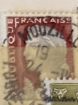
| SOURCE | TITLE| IMAGE MATCH | click to source page |
| Etsy | Vintage France Marianne 1960 Used Postage Stamp - Etsy | 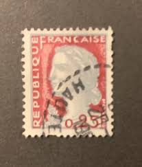 |
| HipStamp | France - 968 - Used - SCV-0.20 | Europe - France & Colonies, General Issue Stamp / HipStamp | 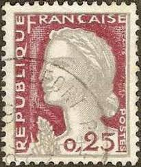 |
| eBay | Sello Francia N°1263 | eBay | 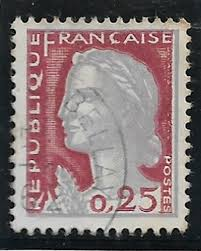 |
| sellosmundo.com | Republique Francaise. . France Europe ref. 253778 | 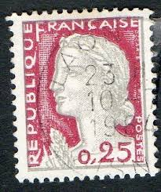 |
| HipStamp | France 1960 Sc#968 25c Marianne USED-Fine-NH. | Europe - France & Colonies, General Issue Stamp / HipStamp | 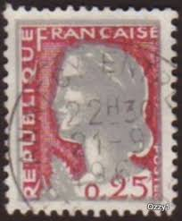 |
| HipStamp | France 968: 25c Marianne, used, VF | Europe - France & Colonies, General Issue Stamp / HipStamp | 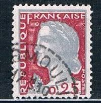 |
| Stamp Collecting Blog | French postage stamps: Marianne by Decaris – types I and II | 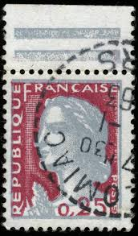 |
| Shutterstock | 96+ Thousand France Vintage From Postage Stamp Royalty-Free Images, Stock Photos & Pictures | Shutterstock | 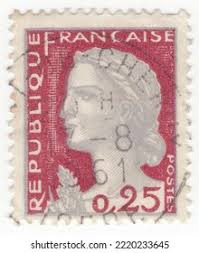 |
| Alamy | Marianne french republic hi-res stock photography and images - Alamy | 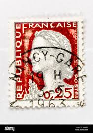 |
| eBay | 2 Republique Francaise 0,25 Postes Marianne de Decaris Red France Postage Stamps | eBay | 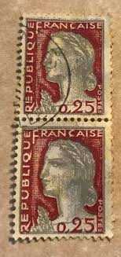 |
| Latinafy | Stamps Polska Sputnik 1 Wostok 1 (1963) | 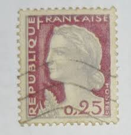 |
| Alamy | FRANCE - CIRCA 1960: stamp printed by France, shows plane MS760 “Paris”, circa 1960 Stock Photo - Alamy | 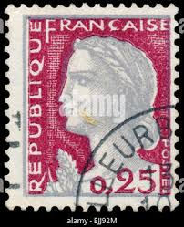 |
| eBay | ÉTAT ALGÉRIEN - ALGER - SURCHARGE tampon NOIRE EA sans BARRE - 0.25Fr DECARIS | eBay | 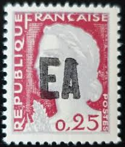 |
| Alamy | FRANCE - CIRCA 1960: A stamp printed in France from the "Arms of French Towns" issue shows Oran coat of arms, circa 1960 Stock Photo - Alamy | 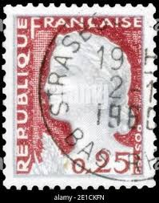 |
| Flickr | France 1960 New Marianne Type 0.25Fr | Please be aware... I … | Flickr | 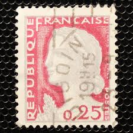 |
| Shutterstock | 1960 Objects: Over 2,180 Royalty-Free Licensable Stock Photos | Shutterstock | 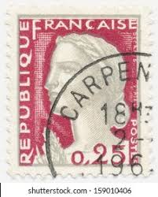 |
| Shutterstock | Vintage French Stamps: Over 8,045 Royalty-Free Licensable Stock Photos | Shutterstock | 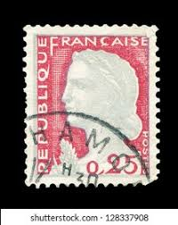 |
| lastdodo.com | Marianne (Decaris) overprinted EA - (handstamping) 0,25 (1962) - Algeria - LastDodo | 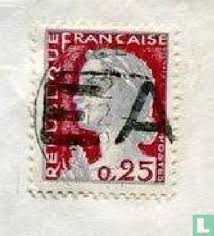 |
| ebid.net | FRANCE, Marianne - Decaris, carmine & grey 1960, 0.25F, #2 on eBid United Kingdom | 217606344 | 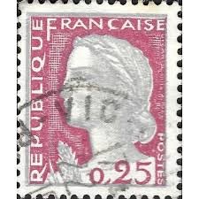 |
| eBay UK | France - 1960 - New Marianne Type - 0.25Fr - Used - #3 | eBay UK | 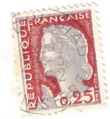 |
| PicClick UK | FRANCE - MARIANNE type Decaris - 14 used 0.25 franc stamps 1960 £1.87 - PicClick UK | 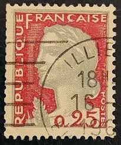 |
| Shutterstock | Karnal Haryana India -august 8th 2025-closeup Stock Photo 2674848561 | Shutterstock | 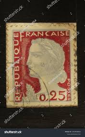 |
| HipStamp | Browse Products in Europe > France & Colonies / HipStamp | 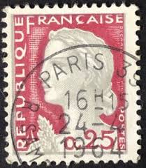 |
| iStock | Marianne French Stamp Stock Photo - Download Image Now - Marianne - Symbol of France, Adult, Color Image - iStock | 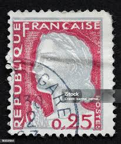 |
| Shutterstock | France Circa 1960 Stamp Printed France Stock Photo 229087567 | Shutterstock | 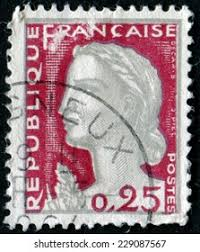 |
| eBay | FRANCE DECARIS TIMBRE CARNET BANDELETTE PUBLICITAIRE N° 1263 NEUF** MNH D10A2 | eBay | 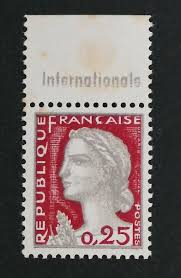 |
| Alamy | France stamp marianne hi-res stock photography and images - Alamy | 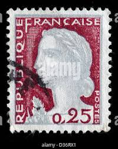 |
| Etsy | Década de 1960 - Conjunto de 50 selos franceses antigos representando Marianne de Decaris - década de 1960 - Etsy Portugal | 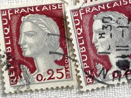 |
| Shutterstock | 1+ Thousand Marianne French Royalty-Free Images, Stock Photos & Pictures | Shutterstock | 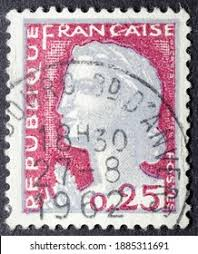 |
| eBay | Rare German Stamps for sale | eBay | 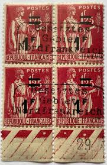 |
| Alamy | France Postage Stamp - Marianne type Decaris Stock Photo - Alamy | 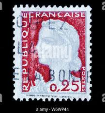 |
| Numismatic & Philatelic (@numistmaticphilatelic) • Facebook | 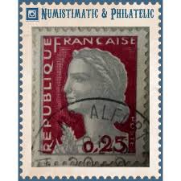 | |
| Etsy | 1960s - Set of 50 Vintage French Stamps Representing the Marianne De Decaris - 1960s - Etsy Israel | 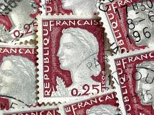 |
| Etsy | Republique Francaise Postes 0,25 , Variety Ts2 Used in Good Condition… - Etsy | 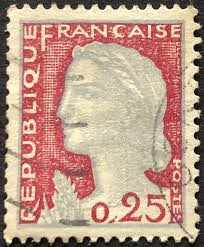 |
| allnumis.com | Stamps Catalog - List of stamps for Marianne-Liberté-Sabine-Semeuse, France | 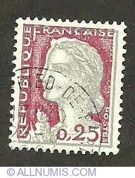 |
| eBay | France 4288 ** Marianne Decaris In 2008 | eBay | 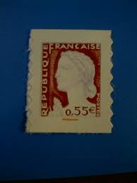 |
| eBay | France Stamp Marianne 0,25 Used 968 | eBay | 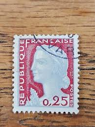 |
| eBay | Superb! Typographic overprint EA of ALGER shifted on 0.25Fr ALGERIAN STATE | eBay | 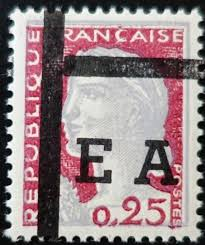 |
| HipStamp | France 1971 Sc#1293c, SG#1905 50c Red Marianne by Bequet USED. | Europe - France & Colonies, General Issue Stamp / HipStamp | 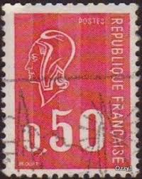 |
| Flickr | beautiful french stamp France 0.25 timbres Francaise Frank… | Flickr | 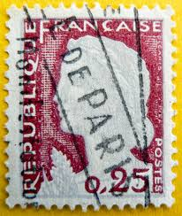 |
| Donia Ali (doniaali91) - Profile | Pinterest | 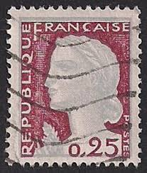 | |
| eBay | France 1960 25 centime Used postal stamp | eBay | 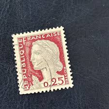 |
| ebid.net | Ceylon stamps 1912 - SG343 - 6c KGV - used 4 on eBid United Kingdom | 161457827 | 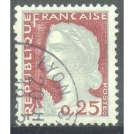 |
| eBay | 4 Vintage 1964 Cancelled FRANCE Postage Stamps Telecommunications | eBay | 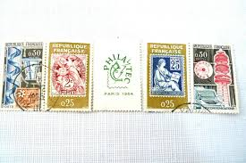 |
| eBay | Foreign Stamp Republique Francaise 0.25 Used - #7397 | eBay | 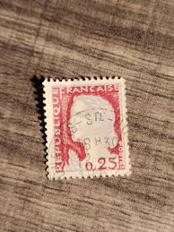 |
| eBay | Francaise Stamp for sale | eBay | 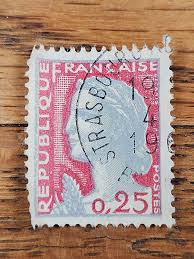 |
| Dreamstime.com | Potage Stamp Stock Photos - Free & Royalty-Free Stock Photos from Dreamstime | 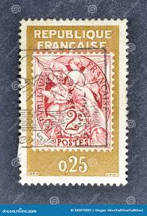 |
| Shutterstock | 9+ Thousand Carta Envio Postal Royalty-Free Images, Stock Photos & Pictures | Shutterstock | 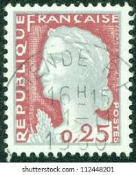 |
| HipStamp | France 1971 Sc#1293c, SG#1905 50c Red Marianne by Bequet USED. | Europe - France & Colonies, General Issue Stamp / HipStamp |  |
| eBay | Algerian State - Alger - Black Stamped Surcharge EA Inverted - 0.25Fr Decaris | eBay | 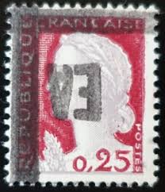 |
| Colnect | Stamp: Marianne type Decaris (type I) (France(Marianne (Decaris)) Yt:FR 1263,Mi:FR 1316,Sn:FR 968,Sg:FR 1494,AFA:FR 1330,Un:FR 1263 📮 | |
| Etsy | 1960年代 - マリアンヌ・ド・デカリスを描いたフランスのヴィンテージ切手50枚セット - 1960年代 - Etsy 日本 | |
| ebid.net | France 1960 - SG1495 - 0.25c "Marianne" x 2 - used on eBid United States | 205052786 | |
| Find Your Stamps Value | Marianne (by Bequet) 50c Rose carmine stamp price, value | |
| eBay | France Stamp Marianne 0,25fr Used 968 Circular Cancel "Morlaix" | eBay | |
| eBay | France Stamp Queen Marianne 0,25f Used 968 Circular Cancel | eBay | |
| Find Your Stamps Value | Bourges Cathedral 1.40fr Gray, Green & black stamp price, value | |
| stampsphilately.com | Used Stamps – StampsPhilately | |
| eBay | 1932-1939 Republique Francais 50c Rose Red Stamp Actual Stamp In Photo TKS655* | eBay | |
| eBay | France Stamp Marianne 1963 Cancel 0,25c Used 1263 | eBay |